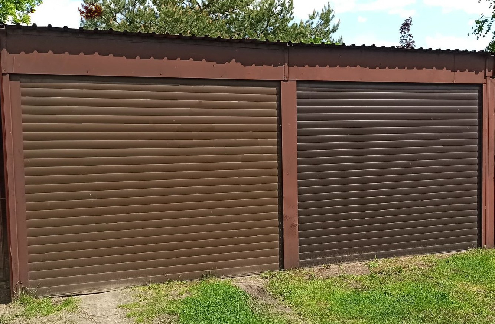
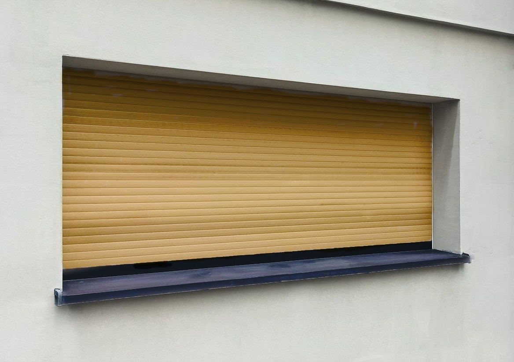
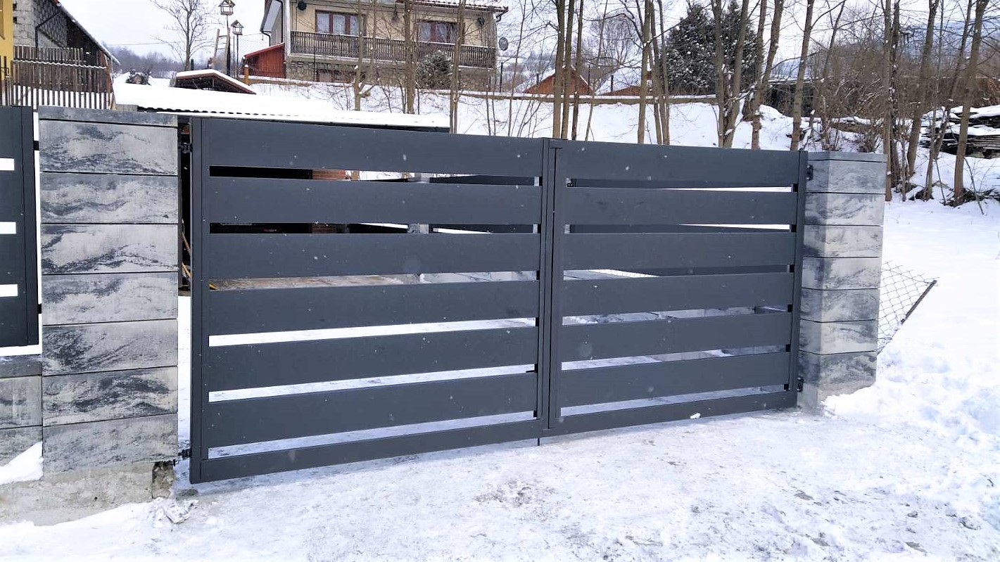

Nasza Oferta

BRAMY GARAŻOWE ROLOWANE I SEGMENTOWE
Firma nasza od lat produkuje i montuje bramy garażowe do budynków mieszkalnych, bloków mieszkalnych oraz wolno stojących garaży. Bramy te można montować do budynku nowobudowanych i istniejących. Oferowane bramy zapewniają funkcjonalność, bezpieczeństwo, komfort obsługi i estetykę. Aktualnie oferujemy 2 typy bram garażowych:- brama rolowana
- brama segmentowa
BRAMY PRZEMYSŁOWE ROLOWANE
Bramy rolowane przemysłowe są instalowane w obiektach przemysłowych, handlowych, usługowych, warsztatach rzemieślniczych, myjniach samochodowych. Są montowane w ścianach zewnętrznych i wewnętrznych w/w obiektów. Mogą być wykonane jako ocieplone lub nieocieplone. Mogą być montowane od środka i od zewnętrz otworu.

ROLETY ZEWNĘTRZNE
Rolety zewnętrzne służą do dodatkowego zabezpieczenia przed włamaniem, słońcem, deszczem, zimnem i hałasem otworów okiennych i drzwiowych w obiektach mieszkalnych, użyteczności publicznej, biurowych itp. Rolety wewnętrzne montowane są wewnątrz obiektów jak wyżej i odcinają i zabezpieczają poszczególne pomieszczenia znajdujące się w obiekcie.OGRODZENIA I FURTKI
Słupki dla bram i furtek wykonujemy z profili stalowych zamkniętych 100x100x4 mm. Zazwyczaj słupy murowane oraz fundamenty dla bram przesuwnych inwestor wykonuje we własnym zakresie w oparciu o wytyczne dostawcy bram.

BRAMY WJAZDOWE
W zależności od możliwości technicznych i życzeń klienta wykonuje się bramy wjazdowe przesuwne lub rozwierane o szerokości od 1 do 16 m i wysokości do 2,5 m. Bramy zależnie od wymagań klienta mogą być wykonane z wypełnieniem lub bez wypełnienia, otwierane ręcznie lub elektrycznie oraz cynkowane, malowane proszkowo (dotyczy to bram o wymiarze max szer. 8000 mm, wys. 2000 mm). Podstawowymi materiałami konstrukcyjnymi do produkcji bram wjazdowych są:- zamknięte i pół zamknięte profile stalowe
- pręty stalowe okrągłe, kwadratowe
- elementy żeliwne ozdobne
KONSTRUKCJE STALOWE
WYKONUJEMY RÓZNEGO RODZAJU KONSTRUKCJE STALOWE NA PRZYKŁAD:- przygotowanie otworów bramowych do montażu bram
- stalowych elementów do bram rolowanych: konsole, wały i inne
- ścianki działowe w obiektach istniejących
- podesty stalowe do obsługi urządzeń technologicznych
- wiaty i hale produkcyjne: konstrukcje + wypełnienie termopanelami